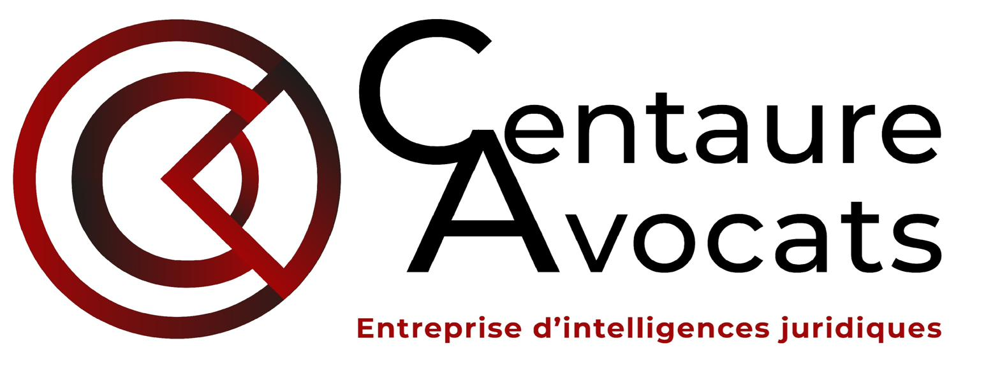
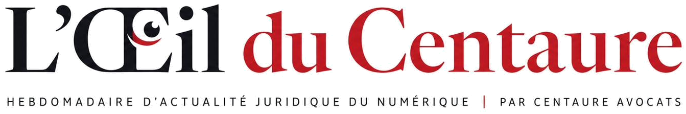
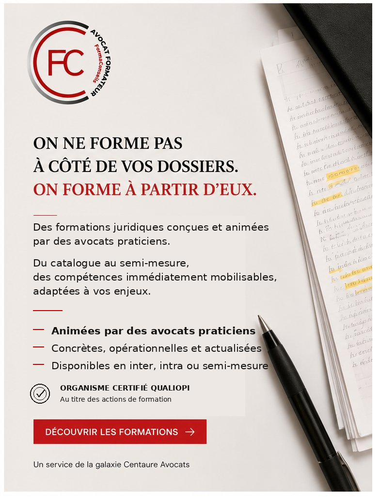
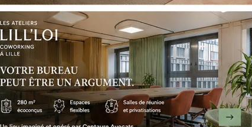
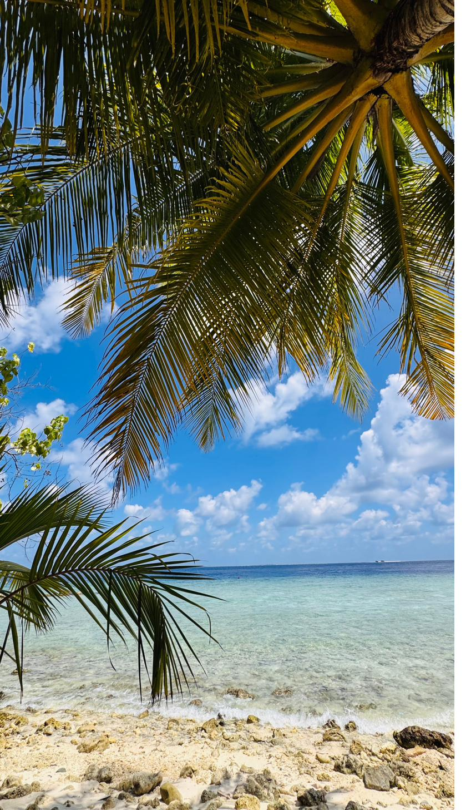

<!DOCTYPE html>
<html lang="fr">
<head>
<meta charset="UTF-8">
<meta name="viewport" content="width=device-width, initial-scale=1.0">
<title>L'Œil du Centaure — Quotidien d'actualité juridique numérique · Centaure Avocats</title>
<meta name="description" content="Le quotidien d'actualité juridique numérique de Centaure Avocats. Jurisprudence, réglementation et veille européenne, sélectionnées et actualisées chaque jour.">
<link rel="preconnect" href="https://fonts.googleapis.com">
<link rel="preconnect" href="https://fonts.gstatic.com" crossorigin>
<link href="https://fonts.googleapis.com/css2?family=Spline+Sans:wght@400;500;600;700&family=Newsreader:opsz,wght@6..72,400;6..72,500;6..72,600&family=Lora:ital@0;1&display=swap" rel="stylesheet">
<style>
  :root{--red:#C8102E;--ink:#14161A;--ink2:#3C4048;--mute:#8A8F98;--bg:#fff;--soft:#F5F6F8;--line:#E8EAED;--card:#fff;--r:16px}
  *{box-sizing:border-box;margin:0;padding:0}
  body{font-family:'Spline Sans',system-ui,sans-serif;color:var(--ink);background:var(--soft);-webkit-font-smoothing:antialiased;line-height:1.55}
  .wrap{max-width:1320px;margin:0 auto;background:var(--bg);min-height:100vh;position:relative}
  a{color:inherit;text-decoration:none}
  img{display:block;max-width:100%}
  button{font-family:inherit;cursor:pointer}

  /* TOPBAR */
  .top{position:sticky;top:0;z-index:50;background:rgba(255,255,255,.9);backdrop-filter:blur(12px);border-bottom:1px solid var(--line)}
  .top-in{display:flex;align-items:center;justify-content:flex-end;gap:14px;padding:12px clamp(20px,4vw,40px);font-size:12.5px;color:var(--mute)}
  .top-profil{display:inline-flex;align-items:center;gap:8px;background:var(--soft);border:1px solid var(--line);border-radius:100px;padding:6px 14px;font-weight:600;color:var(--ink);font-size:13px}
  .top-profil .dot{width:7px;height:7px;border-radius:50%;background:var(--red)}

  /* MASTHEAD */
  .masthead{text-align:center;padding:24px clamp(20px,4vw,40px) 18px;border-bottom:1px solid var(--line)}
  .mh-centaure{display:block;margin:0 auto 14px;width:fit-content}
  .mh-centaure img{height:clamp(38px,4.5vw,50px);width:auto}
  .mh-img{max-width:min(540px,80vw);height:auto;margin:0 auto}
  .mh-sub{font-size:clamp(11px,1.5vw,13px);letter-spacing:.06em;color:var(--mute);margin-top:10px;font-weight:500;text-transform:uppercase}

  /* HERO (accueil) */
  .hero{padding:clamp(40px,6vw,68px) clamp(20px,4vw,40px);max-width:920px;margin:0 auto;text-align:center}
  .hero-kicker{display:inline-flex;align-items:center;gap:9px;font-size:12.5px;font-weight:600;color:var(--red);margin-bottom:20px;letter-spacing:.04em}
  .pulse{width:8px;height:8px;border-radius:50%;background:var(--red);animation:pulse 2s infinite}
  @keyframes pulse{0%{box-shadow:0 0 0 0 rgba(200,16,46,.45)}70%{box-shadow:0 0 0 9px rgba(200,16,46,0)}100%{box-shadow:0 0 0 0 rgba(200,16,46,0)}}
  .hero h1{font-size:clamp(32px,5.5vw,52px);font-weight:700;line-height:1.05;letter-spacing:-.03em;margin-bottom:20px;text-align:justify;hyphens:auto}
  .hero h1 em{font-style:normal;color:var(--red)}
  .hero p{font-size:clamp(16px,2.2vw,19px);color:var(--ink2);line-height:1.65;max-width:640px;margin:0 auto 32px;text-align:justify;hyphens:auto}
  .hero-stats{display:grid;grid-template-columns:repeat(4,1fr);gap:16px;margin:32px auto 36px;padding:26px 0;border-top:1px solid var(--line);border-bottom:1px solid var(--line);max-width:680px}
  @media(max-width:640px){.hero-stats{grid-template-columns:repeat(2,1fr);gap:22px}}
  .hs-n{font-family:'Newsreader',Georgia,serif;font-size:clamp(26px,4vw,38px);font-weight:600;color:var(--red);line-height:1;display:block}
  .hs-l{font-size:12.5px;color:var(--mute);font-weight:500}
  .cover-form{background:var(--soft);border-radius:18px;padding:clamp(24px,4vw,36px);text-align:left}

  /* PORTES */
  .porte{margin-bottom:26px}
  .step-label{font-size:12px;font-weight:600;color:var(--mute);text-transform:uppercase;letter-spacing:.06em;margin-bottom:14px;display:flex;align-items:center;gap:10px;flex-wrap:wrap}
  .step-label .n{width:22px;height:22px;border-radius:50%;background:var(--ink);color:#fff;display:grid;place-items:center;font-size:11px;font-weight:700}
  .step-hint{font-size:12px;font-weight:400;color:var(--mute);text-transform:none;letter-spacing:0}
  .chips{display:flex;flex-wrap:wrap;gap:9px}
  .chips-sub{margin-top:12px;padding-top:12px;border-top:1px dashed var(--line)}
  .chip{padding:11px 18px;border:1.5px solid var(--line);border-radius:100px;background:var(--card);font-size:14.5px;font-weight:600;color:var(--ink2);transition:all .16s}
  .chip.chip-s{font-size:13.5px;padding:9px 15px}
  .chip:hover{border-color:var(--ink);color:var(--ink)}
  .chip.on{border-color:var(--red);background:var(--red);color:#fff}
  .theme-chips{display:flex;flex-wrap:wrap;gap:9px;margin-bottom:24px}
  .tchip{padding:9px 15px;border:1.5px solid var(--line);border-radius:100px;background:var(--card);font-size:13px;font-weight:600;color:var(--mute);transition:all .16s;display:inline-flex;align-items:center;gap:8px}
  .tchip.on{border-color:var(--ink);background:var(--ink);color:#fff}
  .tchip .tk{width:8px;height:8px;border-radius:3px}
  .cta-big{display:inline-flex;align-items:center;gap:10px;background:var(--red);color:#fff;border:none;border-radius:100px;padding:15px 30px;font-size:16px;font-weight:600;transition:all .2s;box-shadow:0 8px 22px -10px rgba(200,16,46,.5)}
  .cta-big:hover:not(:disabled){transform:translateY(-2px)}
  .cta-big:disabled{opacity:.4;box-shadow:none}
  /* ÉDITION */
  .ed-head{display:flex;align-items:flex-end;justify-content:space-between;gap:20px;flex-wrap:wrap;padding:clamp(24px,4vw,40px) clamp(20px,4vw,40px) 8px}
  .ed-title{font-size:clamp(26px,4vw,38px);font-weight:700;letter-spacing:-.03em;line-height:1}
  .ed-sub{font-size:13.5px;color:var(--mute);margin-top:8px;display:flex;align-items:center;gap:8px}
  .ed-sub .live{width:7px;height:7px;border-radius:50%;background:#16A34A}
  .ed-edit{font-size:13.5px;font-weight:600;color:var(--ink2);border:1px solid var(--line);border-radius:100px;padding:8px 16px;background:var(--card)}
  .ed-edit:hover{border-color:var(--ink)}
  .ed-ctx{display:flex;align-items:center;gap:12px;flex-wrap:wrap;padding:0 clamp(20px,4vw,40px) 4px}
  .ed-ctx-label{font-size:11px;font-weight:600;letter-spacing:.08em;text-transform:uppercase;color:var(--mute)}
  .ed-ctx-val{font-size:14px;font-weight:700;color:var(--red);background:rgba(200,16,46,.08);padding:5px 14px;border-radius:100px}

  /* SECTION SECTEUR (haut) */
  .sector{margin:14px clamp(20px,4vw,40px) 0;padding:24px;background:linear-gradient(135deg,rgba(200,16,46,.04),rgba(200,16,46,.01));border:1px solid rgba(200,16,46,.16);border-radius:18px}
  .sector-head{display:flex;align-items:center;gap:10px;font-family:'Newsreader',Georgia,serif;font-size:22px;font-weight:600;margin-bottom:18px;flex-wrap:wrap}
  .sector-star{color:var(--red)}
  .sector-sub{margin-left:auto;font-family:'Spline Sans',sans-serif;font-size:12.5px;font-weight:600;color:#fff;background:var(--red);padding:5px 12px;border-radius:100px;text-transform:uppercase;letter-spacing:.04em}
  .sector-grid{display:grid;grid-template-columns:repeat(auto-fill,minmax(250px,1fr));gap:14px}
  .sec-card{background:#fff;border:1px solid var(--line);border-left:3px solid var(--tc);border-radius:12px;padding:16px 18px;transition:all .18s;position:relative}
  .sec-card:hover{transform:translateY(-2px);box-shadow:0 10px 26px -16px rgba(0,0,0,.2)}
  .sec-card-tag{font-size:10.5px;font-weight:700;letter-spacing:.04em;text-transform:uppercase;margin-bottom:8px}
  .sec-card-title{font-size:15px;font-weight:600;line-height:1.3;margin-bottom:8px;letter-spacing:-.01em}
  .sec-card:hover .sec-card-title{color:var(--red)}
  .sec-card-meta{font-size:12px;color:var(--mute)}
  .sector-empty{font-size:14.5px;color:var(--mute);line-height:1.6;font-style:italic;padding:6px 0}
  /* ===== HABILLAGE PRESSE ===== */
  .press-ribbon{background:#141414;color:#fff;display:flex;justify-content:space-between;align-items:center;padding:8px clamp(20px,4vw,40px);font-size:11px;letter-spacing:.05em}
  .press-ribbon .pr-date{opacity:.72}
  .press-ribbon .pr-sec{display:inline-flex;align-items:center;gap:7px;text-transform:uppercase;cursor:pointer}
  .press-ribbon .pr-sec .pr-dot{width:6px;height:6px;border-radius:50%;background:var(--red)}
  .masthead.press{border-bottom:2px solid #141414}
  .press-eyebrow{display:flex;justify-content:space-between;align-items:center;padding:7px clamp(20px,4vw,40px);border-bottom:1px solid var(--line);font-size:10px;letter-spacing:.1em;color:var(--mute);text-transform:uppercase}
  .press-eyebrow .pe-sec{font-family:'Lora',serif;font-style:italic;letter-spacing:0;text-transform:none;font-size:13px;color:var(--red)}
  .press-break{background:#141414;color:#fff;text-align:center;padding:14px clamp(20px,4vw,40px);font-family:'Lora',Georgia,serif;font-style:italic;font-size:clamp(14px,2vw,16px);letter-spacing:.02em;margin:clamp(20px,3vw,30px) 0}
  .sec-name-rule{font-family:'Newsreader',Georgia,serif;font-size:clamp(17px,2.4vw,21px);font-weight:600;border-left:3px solid var(--ink);padding-left:12px;border-radius:0;margin-bottom:4px}
  /* ===== SECTION MATIÈRE : phare + brèves ===== */
  .sec-lead{display:grid;grid-template-columns:1fr;gap:6px;padding:18px 0 20px;border-bottom:1px solid var(--line);margin-bottom:2px;cursor:pointer}
  .sec-lead:hover .sec-lead-title{color:var(--red)}
  .sec-lead-kicker{display:flex;align-items:center;gap:8px;font-size:10px;letter-spacing:.08em;text-transform:uppercase;font-weight:600}
  .sec-lead-flash{background:var(--red);color:#fff;padding:3px 8px;border-radius:4px;font-size:9px;letter-spacing:.06em}
  .sec-lead-title{font-family:'Newsreader',Georgia,serif;font-size:clamp(20px,3vw,26px);font-weight:600;line-height:1.18;letter-spacing:-.01em;transition:color .15s;text-align:justify;hyphens:auto}
  .sec-lead-chapo{font-family:'Lora',Georgia,serif;font-size:16.5px;line-height:1.55;color:var(--ink2);margin-top:4px;max-width:680px;text-align:justify;hyphens:auto}
  .sec-lead-meta{display:flex;align-items:center;gap:9px;font-size:13px;color:var(--mute);margin-top:6px;flex-wrap:wrap}
  .sec-lead-meta .sll-src{font-weight:600;color:var(--ink)}
  .sec-lead-meta .sll-read{color:var(--red);font-weight:600;text-decoration:none}
  .sec-briefs{display:grid;grid-template-columns:repeat(auto-fill,minmax(280px,1fr));gap:0 28px}
  .sec-brief{display:flex;flex-direction:column;gap:3px;padding:13px 0;border-bottom:1px solid var(--line);cursor:pointer}
  .sec-brief:hover .sec-brief-title{color:var(--red)}
  .sec-brief-kicker{font-size:11px;letter-spacing:.06em;text-transform:uppercase;font-weight:600;display:flex;align-items:center;gap:6px}
  .sec-brief-title{font-family:'Newsreader',Georgia,serif;font-size:17.5px;font-weight:500;line-height:1.28;transition:color .15s;text-align:justify;hyphens:auto}
  .sec-brief-meta{font-size:13px;color:var(--mute);margin-top:3px}
  .sec-brief-meta .sbr-read{color:var(--red);text-decoration:none;margin-left:6px}
  /* ===== ÉDITION OUTRE-MER (bleu profond) ===== */
  :root{--om:#0B3D5C;--om-sand:#E8A33D}
  .press-ribbon.om{background:var(--om)}
  .press-ribbon.om .pr-dot{background:var(--om-sand)}
  .masthead.press.om{border-bottom-color:var(--om)}
  .om-mast{display:flex;align-items:center;justify-content:center;gap:16px}
  .om-seal{border:1.5px solid var(--om);color:var(--om);border-radius:50%;width:58px;height:58px;display:flex;flex-direction:column;align-items:center;justify-content:center;line-height:1.12;text-transform:uppercase;letter-spacing:.04em;font-weight:600;flex-shrink:0}
  .om-seal-top{font-size:7px;opacity:.7}
  .om-seal-main{font-size:12px;font-family:'Newsreader',Georgia,serif}
  .press-eyebrow.om .pe-sec.om{color:var(--om)}
  .press-break.om{background:var(--om)}
  .bref-h.om{border-bottom-color:var(--om)}
  .bref-h.om .live.om{background:var(--om-sand)}
  .om-ph{background:var(--om)!important;position:relative;overflow:hidden}
  .om-ph-img{position:absolute;inset:0;width:100%;height:100%;object-fit:cover}
  .om-ph .ph-label{position:relative;z-index:2}
  .om-tag{color:var(--om)}
  .btn-om{background:var(--om);color:#fff;border:1px solid var(--om)}
  .btn-om:hover{background:#0a3450}
  /* Ligne d'annonce — accès édition outre-mer */
  .om-annonce{display:flex;align-items:center;justify-content:center;gap:10px;padding:14px 20px;margin:0;font-size:15px;color:var(--om);background:rgba(11,61,92,.06);border-bottom:1px solid rgba(11,61,92,.14);cursor:pointer}
  .om-annonce strong{font-family:'Newsreader',Georgia,serif;font-weight:600}
  .om-annonce .oma-arr{transition:transform .15s}
  .om-annonce:hover .oma-arr{transform:translateX(3px)}
  .om-groupe-head{font-family:'Lora',Georgia,serif;font-style:italic;font-size:clamp(18px,2.6vw,23px);color:var(--om);margin:clamp(22px,3vw,34px) 0 6px;padding-bottom:8px;border-bottom:2px solid var(--om)}
  .om-terr{padding:14px 0 6px}
  .om-terr-name{font-family:'Newsreader',Georgia,serif;font-size:clamp(16px,2vw,19px);font-weight:600;color:#14161A;border-left:3px solid var(--om);padding-left:11px;margin-bottom:8px}
  .sec-lead-kicker.om .sec-lead-flash.om{background:var(--om)}
  .sll-read.om,.sbr-read.om{color:var(--om)}
  .om-empty{max-width:760px;margin:0 auto;padding:40px 22px;text-align:center;font-family:'Lora',Georgia,serif;font-style:italic;color:var(--mute);font-size:15px}
  /* Carte présence Centaure — insérée dans la section du territoire */
  .om-terr-noactu{font-family:'Lora',Georgia,serif;font-style:italic;font-size:14.5px;color:var(--mute);padding:6px 0 12px}
  .omp-card.omp-inline{border:1px solid var(--line);border-radius:6px;overflow:hidden;background:var(--soft);display:flex;margin:14px 0 4px;max-width:560px}
  .omp-inline .omp-head{position:relative;width:120px;min-height:110px;flex-shrink:0;display:flex;align-items:flex-start;padding:11px 12px;overflow:hidden}
  .omp-inline .omp-code{color:rgba(255,255,255,.92);font-family:'Spline Sans',monospace;font-size:10px;letter-spacing:.12em;font-weight:500;position:relative;z-index:2}
  .omp-inline .omp-svg{position:absolute;inset:0;display:flex;align-items:center;justify-content:center;color:#fff;opacity:.9}
  .omp-inline .omp-svg svg{width:62px;height:62px}
  .omp-inline .omp-body{padding:14px 18px;flex:1}
  .omp-presence-tag{font-size:11px;letter-spacing:.1em;text-transform:uppercase;color:var(--om);font-weight:700;margin-bottom:7px}
  .omp-inline .omp-txt{font-size:13.5px;line-height:1.55;color:var(--ink2);margin:0 0 11px;text-align:justify;hyphens:auto}
  .omp-tags{display:flex;flex-wrap:wrap;gap:6px}
  .omp-tag{font-size:10px;letter-spacing:.06em;text-transform:uppercase;color:var(--mute);border:1px solid var(--line);border-radius:3px;padding:4px 8px}
  .om-presence-cta{display:block;text-align:center;margin-top:28px;padding:15px 22px;background:var(--om);color:#fff;border-radius:var(--r);font-size:14px;font-weight:600;text-decoration:none;transition:background .15s}
  .om-presence-cta:hover{background:#0a3450}
  @media(max-width:640px){.omp-card.omp-inline{flex-direction:column}.omp-inline .omp-head{width:100%;min-height:90px}}

  /* UNE + EN BREF */
  .feature{display:grid;grid-template-columns:1.5fr 1fr;gap:clamp(20px,3vw,40px);align-items:start;padding:clamp(20px,3vw,32px) clamp(20px,4vw,40px)}
  @media(max-width:860px){.feature{grid-template-columns:1fr}}
  .feat-img{width:100%;aspect-ratio:16/10;border-radius:var(--r);overflow:hidden;position:relative;margin-bottom:18px}
  .feat-photo{width:100%;height:100%;object-fit:cover}
  .feat-img .ph{width:100%;height:100%;display:flex;align-items:flex-end;padding:18px}
  .feat-photo-tag,.ph-label{position:absolute;bottom:0;left:0;right:0;padding:16px 18px;background:linear-gradient(transparent,rgba(0,0,0,.7));color:#fff;font-size:12px;font-weight:700;letter-spacing:.06em;text-transform:uppercase}
  .ph-label{position:static;background:none;padding:0}
  .tag{display:inline-flex;align-items:center;gap:7px;font-size:12px;font-weight:700;letter-spacing:.04em;text-transform:uppercase;color:var(--red);margin-bottom:14px}
  .tag .tk{width:9px;height:9px;border-radius:3px}
  .feat-title{font-size:clamp(26px,3.6vw,40px);font-weight:700;line-height:1.12;letter-spacing:-.03em;margin-bottom:16px;text-align:justify;hyphens:auto}
  .feat-chapo{font-size:clamp(16px,2vw,18px);color:var(--ink2);line-height:1.6;margin-bottom:18px;text-align:justify;hyphens:auto}
  .feat-meta{display:flex;align-items:center;gap:10px;font-size:13.5px;color:var(--mute);flex-wrap:wrap}
  .feat-src{color:var(--ink);font-weight:600}
  .meta-read{color:var(--red);font-weight:600}
  .feat-actions{display:flex;gap:10px;margin-top:20px;flex-wrap:wrap}
  .btn{display:inline-flex;align-items:center;gap:9px;padding:11px 18px;border-radius:100px;font-size:14px;font-weight:600;border:none;transition:all .16s}
  .btn-dark{background:var(--ink);color:#fff}.btn-dark:hover{background:#000}
  .btn-ghost{background:var(--card);color:var(--ink);border:1.5px solid var(--line)}.btn-ghost:hover{border-color:var(--ink)}
  .bref-h{font-size:13.5px;font-weight:700;letter-spacing:.1em;text-transform:uppercase;margin-bottom:16px;padding-bottom:12px;border-bottom:2px solid var(--ink);display:flex;align-items:center;gap:9px}
  .bref-h .live{width:8px;height:8px;border-radius:50%;background:var(--red)}
  .bref-more{font-family:'Lora',Georgia,serif;font-style:italic;font-size:13.5px;line-height:1.55;color:var(--mute);padding:14px 0 4px;border-top:1px solid var(--line);margin-top:10px}
  .bref-item{display:block;width:100%;text-align:left;padding:14px 0;border-bottom:1px solid var(--line);background:none;border-left:0;border-right:0;border-top:0;transition:all .15s}
  .bref-item:hover{padding-left:6px}
  .bref-item:hover .bi-title{color:var(--red)}
  .bi-tag{display:flex;align-items:center;gap:7px;font-size:11px;font-weight:700;letter-spacing:.04em;text-transform:uppercase;color:var(--mute);margin-bottom:6px}
  .bi-tag .tk{width:7px;height:7px;border-radius:2px}
  .bi-title{font-size:17.5px;font-weight:600;line-height:1.32;margin-bottom:5px;text-align:justify;hyphens:auto}
  .bi-meta{font-size:13px;color:var(--mute)}
  /* RUBRIQUES PAR MATIÈRE */
  .sections{padding:clamp(20px,3vw,32px) clamp(20px,4vw,40px) clamp(32px,4vw,48px)}
  .sections-intro{display:flex;align-items:center;gap:18px;margin:8px 0 28px}
  .si-line{flex:1;height:1px;background:var(--line)}
  .si-label{font-size:12px;font-weight:700;letter-spacing:.1em;text-transform:uppercase;color:var(--mute)}
  .sec{margin-bottom:clamp(28px,4vw,42px)}
  .sec-head{display:flex;align-items:center;gap:14px;margin-bottom:20px;flex-wrap:wrap}
  .sec-bar{width:4px;height:26px;border-radius:3px}
  .sec-name{font-size:clamp(19px,2.4vw,24px);font-weight:700;letter-spacing:-.02em}
  .sec-ref{margin-left:auto;display:flex;align-items:center;gap:8px;font-size:13px;color:var(--mute);font-weight:500}
  .cards{display:grid;grid-template-columns:repeat(auto-fill,minmax(250px,1fr));gap:16px}
  .card{background:var(--card);border:1px solid var(--line);border-radius:var(--r);padding:20px;transition:all .2s;display:flex;flex-direction:column}
  .card:hover{border-color:#D5D8DD;box-shadow:0 12px 30px -16px rgba(20,22,26,.18);transform:translateY(-3px)}
  .card-tag{display:flex;align-items:center;gap:7px;font-size:11px;font-weight:700;letter-spacing:.04em;text-transform:uppercase;margin-bottom:12px}
  .card-flash{font-size:10px;font-weight:800;color:#fff;background:var(--red);padding:2px 7px;border-radius:5px}
  .card-title{font-size:17px;font-weight:700;line-height:1.3;letter-spacing:-.02em;margin-bottom:auto}
  .card:hover .card-title{color:var(--red)}
  .card-meta{display:flex;align-items:center;gap:8px;font-size:12.5px;color:var(--mute);margin-top:14px;padding-top:12px;border-top:1px solid var(--line)}
  .card-src{color:var(--ink2);font-weight:600}
  .card-read{margin-left:auto;color:var(--red);font-weight:600}

  /* ENCART FORMATION */
  .forma{grid-column:1/-1;display:flex;align-items:center;gap:16px;background:linear-gradient(100deg,rgba(200,16,46,.05),rgba(200,16,46,.02));border:1px solid rgba(200,16,46,.18);border-radius:var(--r);padding:18px 22px;margin-top:4px}
  .forma-badge{font-size:10px;font-weight:800;color:#fff;background:var(--red);padding:5px 10px;border-radius:7px;white-space:nowrap;letter-spacing:.04em}
  .forma-t{font-weight:700;font-size:15px;margin-bottom:3px}.forma-d{font-size:12.5px;color:var(--mute)}
  .forma-arr{margin-left:auto;color:var(--red);font-weight:700;font-size:18px}

  /* ENCARTS PUB */
  .promo-forma,.promo-duo{margin:clamp(28px,4vw,40px) 0}
  .promo-label{font-size:10.5px;font-weight:600;letter-spacing:.12em;text-transform:uppercase;color:var(--mute);margin-bottom:12px;text-align:center}
  .pf-grid{display:grid;grid-template-columns:1fr 1fr;gap:28px;align-items:stretch}
  @media(max-width:760px){.pf-grid{grid-template-columns:1fr}}
  .pf-pub img{width:100%;height:auto;border-radius:14px}
  .pf-cal{background:var(--card);border:1px solid var(--line);border-radius:14px;padding:22px 24px}
  .pf-cal-head{font-family:'Newsreader',Georgia,serif;font-size:20px;font-weight:600;margin-bottom:16px}
  .pf-cal-row{display:flex;gap:14px;padding:11px 0;border-bottom:1px solid var(--line)}
  .pf-cal-row:hover .pf-titre{color:var(--red)}
  .pf-date{font-weight:700;color:var(--red);font-size:13.5px;min-width:72px;white-space:nowrap}
  .pf-titre{font-size:14px;font-weight:600;line-height:1.35}
  .pf-lieu{display:block;font-size:12px;font-weight:400;color:var(--mute);margin-top:2px}
  .pf-all{margin-top:14px;display:inline-block;font-size:13.5px;font-weight:600;color:var(--red)}
  .pd-grid{display:grid;grid-template-columns:1fr 1fr;gap:28px}
  @media(max-width:760px){.pd-grid{grid-template-columns:1fr}}
  .pd-pub img{width:100%;height:auto;border-radius:14px;box-shadow:0 8px 24px -16px rgba(0,0,0,.3);transition:transform .2s}
  .pd-pub:hover img{transform:translateY(-2px)}

  /* AVATARS */
  .avts{display:inline-flex;align-items:center}
  .avt{width:24px;height:24px;border-radius:50%;object-fit:cover;border:2px solid #fff;box-shadow:0 1px 4px rgba(0,0,0,.15);margin-left:-7px;background:#ddd}
  .avt:first-child{margin-left:0}
  .avt-i{display:inline-flex;align-items:center;justify-content:center;font-size:9px;font-weight:700;color:#fff;background:var(--ink)}

  /* FOOTER */
  .footer{background:var(--ink);color:rgba(255,255,255,.6);padding:clamp(40px,6vw,60px) clamp(20px,4vw,40px) 28px}
  .footer-top{display:grid;grid-template-columns:2fr 1fr 1fr;gap:40px;padding-bottom:30px;border-bottom:1px solid rgba(255,255,255,.1)}
  @media(max-width:760px){.footer-top{grid-template-columns:1fr;gap:28px}}
  .footer-logo{height:48px;background:#fff;padding:8px 12px;border-radius:8px;margin-bottom:16px;width:fit-content}
  .footer-tag{font-size:13.5px;line-height:1.6;color:rgba(255,255,255,.55);max-width:380px}
  .footer-h{font-size:11px;font-weight:700;letter-spacing:.12em;text-transform:uppercase;color:rgba(255,255,255,.4);margin-bottom:16px}
  .footer-col{display:flex;flex-direction:column;gap:11px}
  .footer-col a,.footer-col span{font-size:14px;color:rgba(255,255,255,.7);transition:color .15s}
  .footer-col a:hover{color:var(--red)}
  .footer-deon{font-family:'Lora',Georgia,serif;font-style:italic;font-size:12px;line-height:1.7;color:rgba(255,255,255,.4);max-width:920px;margin:22px 0;text-align:justify;hyphens:auto}
  .footer-legal{display:flex;justify-content:space-between;align-items:center;flex-wrap:wrap;gap:12px;font-size:11.5px;color:rgba(255,255,255,.4);padding-top:18px;border-top:1px solid rgba(255,255,255,.1)}
  .footer-legal a{color:rgba(255,255,255,.7);text-decoration:underline}

  /* PANNEAU */
  .overlay{position:fixed;inset:0;background:rgba(20,22,26,.55);backdrop-filter:blur(4px);display:flex;align-items:flex-end;justify-content:center;z-index:100}
  @media(min-width:600px){.overlay{align-items:center;padding:20px}}
  .sheet{background:var(--bg);border-radius:24px 24px 0 0;padding:30px 26px 34px;max-width:460px;width:100%;position:relative;animation:slideup .3s cubic-bezier(.2,.9,.3,1) both}
  @media(min-width:600px){.sheet{border-radius:24px}}
  @keyframes slideup{from{transform:translateY(100%)}to{transform:none}}
  .sheet-close{position:absolute;top:18px;right:18px;width:32px;height:32px;border-radius:50%;background:var(--soft);border:none;font-size:15px;color:var(--mute)}
  .sheet-tag{display:flex;align-items:center;gap:8px;font-size:11px;font-weight:700;letter-spacing:.06em;text-transform:uppercase;color:var(--red);margin-bottom:14px}
  .sheet-tag .tk{width:8px;height:8px;border-radius:3px}
  .sheet-title{font-family:'Newsreader',Georgia,serif;font-size:21px;font-weight:600;line-height:1.25;margin-bottom:14px}
  .sheet-avts{display:flex;margin-bottom:14px}.sheet-avts .avt{width:42px;height:42px}
  .sheet-txt{font-size:14.5px;color:var(--ink2);line-height:1.6;margin-bottom:22px;text-align:justify;hyphens:auto}
  .sheet-btn{display:flex;align-items:center;justify-content:center;gap:9px;width:100%;padding:14px;border-radius:12px;font-size:15px;font-weight:600;border:none;margin-bottom:10px;transition:all .16s}
  .sb-red{background:var(--red);color:#fff}.sb-red:hover{background:#B0152A}
  .sb-dark{background:var(--ink);color:#fff}.sb-dark:hover{background:#000}
  .sb-ghost{background:var(--card);color:var(--ink);border:1.5px solid var(--line)}.sb-ghost:hover{border-color:var(--ink)}

  .rev{animation:rev .5s cubic-bezier(.2,.8,.3,1) both}
  @keyframes rev{from{opacity:0;transform:translateY(14px)}to{opacity:1;transform:none}}
  @media(prefers-reduced-motion:reduce){*{animation:none!important;transition:none!important}}
</style>
</head>
<body><div class="wrap"><div id="app"></div></div>
<script>
const VEILLE_ENDPOINT = "veille.json";
const OUTREMER_ENDPOINT = "outremer.json";
const FORMA_URL="https://celadon-sopapillas-42aeb2.netlify.app";
const FAMILLES = [
  { id:"public", label:"Acteur public" },
  { id:"prive", label:"Acteur privé" }
];
const SOUS_PROFILS = {
  public: [
    { id:"commune", label:"Commune / Intercommunalité" },
    { id:"departement", label:"Département" },
    { id:"region", label:"Région" },
    { id:"ep", label:"Établissement public / Opérateur de l'État" },
    { id:"hopital", label:"Hôpital / GHT / Établissement de santé" },
    { id:"bailleur", label:"Bailleur social" }
  ],
  prive: [
    { id:"pme", label:"PME / ETI" },
    { id:"groupe", label:"Grand groupe" },
    { id:"ess", label:"ESS (association, fondation, mutuelle)" }
  ]
};
const TERRITOIRES = [
  { id:"hexagone", label:"Hexagone (métropole)" },
  { id:"outremer", label:"Outre-mer" }
];
const SECTEURS = [
  { id:"sante", label:"Santé", mat:["asn","dpa","fps"] },
  { id:"transport", label:"Transport", mat:["dpa","urb","dpg"] },
  { id:"energie", label:"Énergie", mat:["urb","dpa","dpg"] },
  { id:"btp", label:"Construction / BTP", mat:["dpa","urb","dpg"] },
  { id:"numerique", label:"Numérique", mat:["dpi","dpa","dpg"] },
  { id:"environnement", label:"Environnement", mat:["urb","dpg","dpa"] },
  { id:"social", label:"Social", mat:["asn","fps","lib"] },
  { id:"eau", label:"Eau / Déchets", mat:["urb","dpa","dpg"] },
  { id:"amenagement", label:"Aménagement", mat:["urb","dpa","dpg"] },
  { id:"culture", label:"Culture", mat:["dpi","dpa","dpg"] },
  { id:"agriculture", label:"Agriculture", mat:["urb","dpe","dpg"] }
];
const SECTEUR_MATCH = {
  sante:    {comps:["asn"], kw:/santé|hôpital|hospitalier|médical|médico-social|ehpad|ght|ars|soin|patient|médicament|sécurité sociale|assurance maladie/i},
  transport:{comps:[], kw:/transport|ferroviaire|aérien|aéroport|aérodrome|sncf|ratp|mobilité|autoroute|transport routier|réseau routier|portuaire|maritime|navigation|fret|compagnie aérienne/i},
  energie:  {comps:[], kw:/énergie|électricité|gaz|renouvelable|éolien|photovolta|nucléaire|carbone|batterie|hydrocarbure|pétrole|réseau électrique/i},
  btp:      {comps:["dpa"], kw:/\bconstruction\b|marché de travaux|travaux publics|chantier|décennale|maître d'œuvre|maîtrise d'ouvrage|permis de construire|génie civil|gros œuvre|bâtiment et travaux|secteur du bâtiment|entreprise de bâtiment|\bBTP\b/i},
  numerique:{comps:["dpi"], kw:/numérique|données|cyber|informatique|logiciel|cloud|intelligence artificielle|rgpd|cnil|vulnérabilité|internet|plateforme/i},
  environnement:{comps:["urb"], kw:/environnement|climat|pollution|déchet|biodiversité|natura|espèce|écolog|carbone|émission|nature/i},
  social:   {comps:["fps","asn"], kw:/social|emploi|travail|chômage|retraite|fonction publique|agent|dialogue social|aide sociale|rsa|handicap/i},
  eau:      {comps:["urb"], kw:/\beau\b|déchet|assainissement|fluvial|aquatique|marin|fonds marins|hydraulique|station d'épuration|potable/i},
  amenagement:{comps:["urb"], kw:/aménagement|urbanisme|foncier|plu|zac|lotissement|territoire|logement|habitat|construire|domanialité/i},
  culture:  {comps:[], kw:/\bculture\b|culturel|patrimoine|monument historique|musée|\blivre\b|édition littéraire|maison d'édition|contrat d'édition|droit d'auteur|propriété littéraire|artistique|spectacle vivant|cinéma|audiovisuel|tapisserie|œuvre d'art|œuvre musicale|œuvre littéraire/i},
  agriculture:{comps:[], kw:/agricol|agriculture|fertilisation|azote|pêche|élevage|rural|alimentaire|phytosanitaire/i}
};
// ===== ÉDITION OUTRE-MER : territoires + détection =====
// Chaque territoire : libellé, source(s) locale(s) (préfixe nom de juridiction), mots-clés de détection dans titre/chapô.
const OM_TERRITOIRES = {
  guadeloupe:  {label:"Guadeloupe",            src:/guadeloupe/i, kw:/guadeloupe|pointe-à-pitre|basse-terre|gourbeyre/i},
  martinique:  {label:"Martinique",            src:/martinique/i, kw:/martinique|fort-de-france/i},
  guyane:      {label:"Guyane",                src:/guyane/i,     kw:/guyane|cayenne|kourou/i},
  stbarthelemy:{label:"Saint-Barthélemy",      src:/saint-barth|saint-barthélemy/i, kw:/saint-barthélemy|saint-barth/i},
  stmartin:    {label:"Saint-Martin",          src:/saint-martin/i, kw:/saint-martin/i},
  reunion:     {label:"La Réunion",            src:/réunion|la reunion|la réunion/i, kw:/\bla réunion\b|saint-denis de la réunion|saint-pierre de la réunion|île de la réunion|département de la réunion|974\b/i},
  mayotte:     {label:"Mayotte",               src:/mayotte/i,    kw:/mayotte|mamoudzou/i},
  ncaledonie:  {label:"Nouvelle-Calédonie",    src:/nouvelle-calédonie|nouvelle-caledonie/i, kw:/nouvelle-calédonie|nouméa|noumea|kanak|accord de nouméa/i},
  polynesie:   {label:"Polynésie française",   src:/polynésie|polynesie/i, kw:/polynésie|papeete|tahiti/i},
  wallis:      {label:"Wallis-et-Futuna",      src:/wallis|futuna/i, kw:/wallis-et-futuna|wallis et futuna|wallis|futuna/i},
  stpierre:    {label:"Saint-Pierre-et-Miquelon", src:/saint-pierre-et-miquelon|saint-pierre et miquelon|miquelon/i, kw:/saint-pierre-et-miquelon|miquelon/i}
};
// Regroupements géographiques (intitulés, sans le mot « bassin »)
const OM_GROUPES = [
  {label:"Antilles-Guyane", ids:["guadeloupe","martinique","guyane","stbarthelemy","stmartin"]},
  {label:"Océan Indien",    ids:["reunion","mayotte"]},
  {label:"Pacifique",       ids:["ncaledonie","polynesie","wallis"]},
  {label:"Atlantique Nord", ids:["stpierre"]}
];
// Mots-clés « outre-mer en général » (pour la une transversale)
const OM_GENERAL = /outre-mer|outremer|ultramarin|\bdrom\b|\bdrom-com\b|collectivités d'outre-mer|départements et régions d'outre-mer|\bantilles\b|chlordécone|loi pays|accord de nouméa/i;
// Présence réelle de Centaure en outre-mer (source : site amiral / page implantations)
const OM_PRESENCE = {
  mayotte:{code:"DPT 976",nom:"Mayotte",statut:"Département · Océan Indien",grad:"linear-gradient(135deg,#1e6e6e 0%,#0f3d54 100%)",
    tags:["Droit des étrangers", "Libertés fondamentales"],
    txt:"Présence quotidienne aux côtés de la préfecture de Mayotte sur les contentieux liés au droit des étrangers, à l'éloignement et au droit d'asile. Centaure Avocats est notamment intervenu dans le cadre de l'opération Wuambushu et accompagne en urgence les besoins opérationnels de la préfecture.",
    svg:`<svg viewBox="0 0 120 120" xmlns="http://www.w3.org/2000/svg" aria-hidden="true"> <ellipse cx="50" cy="64" rx="44" ry="38" stroke="currentColor" stroke-width="1.2" fill="none" opacity="0.18" stroke-dasharray="2 3"/> <g opacity="0.85"> <path d="M 48 22 C 41 21 36 25 36 31 C 36 35 40 37 43 36 C 46 35 47 33 46 31 C 45 28 46 26 49 26 C 53 26 56 28 56 32 C 56 36 53 39 49 41 C 41 45 35 50 33 58 C 31 66 33 74 38 80 C 43 86 50 88 56 86 C 62 84 65 80 64 75 C 63 71 60 69 57 70 C 54 71 53 73 54 76 C 55 78 53 80 51 79 C 47 78 45 75 46 71 C 47 65 52 60 57 56 C 64 51 68 44 65 35 C 63 27 56 22 48 22 Z" fill="currentColor"/> <path d="M 56 22 C 60 18 64 20 63 25 C 60 23 58 23 56 25 Z" fill="currentColor"/> <path d="M 36 31 C 32 30 30 32 30 35 C 32 35 34 34 36 33 Z" fill="currentColor"/> <circle cx="42" cy="29" r="1.3" fill="var(--cream)" opacity="0.95"/> </g> <g opacity="0.55"> <path d="M 90 52 C 84 51 79 55 80 61 C 81 67 87 70 92 67 C 96 65 96 58 92 53 C 91 52 91 52 90 52 Z" fill="currentColor"/> </g> <path d="M 64 60 Q 72 56 80 60" stroke="currentColor" stroke-width="1.1" fill="none" opacity="0.4"/> <path d="M 64 68 Q 72 64 80 68" stroke="currentColor" stroke-width="1.1" fill="none" opacity="0.3"/> </svg>`},
  reunion:{code:"RÉG 974",nom:"La Réunion",statut:"Région · Océan Indien",grad:"linear-gradient(135deg,#6b1810 0%,#2d0a08 100%)",
    tags:["Droit public général", "Contentieux administratif"],
    txt:"Accompagnement des acteurs publics réunionnais sur des sujets de droit public général et de libertés fondamentales. Une intervention bâtie sur des partenariats locaux solides avec les barreaux de Saint-Denis et Saint-Pierre.",
    svg:`<svg viewBox="0 0 120 120" xmlns="http://www.w3.org/2000/svg" aria-hidden="true"> <path d="M26 64 C20 58 24 46 34 42 C36 32 50 24 64 28 C76 24 92 32 94 46 C100 52 100 66 92 72 C90 84 76 92 60 88 C46 92 28 80 26 64 Z" fill="currentColor" opacity="0.18"/> <path d="M48 70 L62 44 L76 70 Z" fill="currentColor" opacity="0.5"/> <path d="M58 50 C60 46 64 46 66 50" stroke="currentColor" stroke-width="1.5" fill="none" opacity="0.6"/> <circle cx="62" cy="46" r="2" fill="currentColor" opacity="0.8"/> </svg>`},
  guyane:{code:"CTG 973",nom:"Guyane",statut:"Collectivité territoriale · Amérique du Sud",grad:"linear-gradient(135deg,#0f5530 0%,#0a2818 100%)",
    tags:["Contrats publics", "Fonction publique", "Droit institutionnel"],
    txt:"Centaure Avocats accompagne un groupe guyanais en matière de contrats publics et intervient régulièrement auprès des autorités publiques locales sur des sujets de fonction publique et de droit institutionnel.",
    svg:`<svg viewBox="0 0 120 120" xmlns="http://www.w3.org/2000/svg" aria-hidden="true"> <path d="M30 30 L88 26 C94 38 92 56 88 70 L80 92 L52 96 L34 86 L26 64 C24 50 26 38 30 30 Z" fill="currentColor" opacity="0.18"/> <path d="M58 38 L58 86" stroke="currentColor" stroke-width="1.5" fill="none" opacity="0.55"/> <path d="M58 50 L46 56 M58 50 L70 56 M58 62 L44 70 M58 62 L72 70 M58 74 L48 80 M58 74 L68 80" stroke="currentColor" stroke-width="1.2" fill="none" opacity="0.5"/> </svg>`},
  polynesie:{code:"POF 987",nom:"Polynésie française",statut:"Collectivité d'outre-mer · Pacifique sud",grad:"linear-gradient(135deg,#0a4f6e 0%,#062a3a 100%)",
    tags:["Droit public des affaires", "Commande publique", "Acteurs économiques"],
    txt:"Accompagnement d'acteurs économiques et institutionnels polynésiens sur des problématiques de droit public des affaires — notamment l'interventionnisme économique de la collectivité d'outre-mer et la commande publique. Une intervention spécifique compte tenu du statut juridique particulier de la collectivité d'outre-mer.",
    svg:`<svg viewBox="0 0 120 120" xmlns="http://www.w3.org/2000/svg" aria-hidden="true"> <circle cx="60" cy="50" r="12" fill="currentColor" opacity="0.45"/> <g stroke="currentColor" stroke-width="1.6" stroke-linecap="round" opacity="0.65"> <line x1="60" y1="28" x2="60" y2="34"/> <line x1="45" y1="34" x2="49" y2="38"/> <line x1="75" y1="34" x2="71" y2="38"/> <line x1="38" y1="50" x2="44" y2="50"/> <line x1="82" y1="50" x2="76" y2="50"/> <line x1="45" y1="66" x2="49" y2="62"/> <line x1="75" y1="66" x2="71" y2="62"/> </g> <g opacity="0.85"> <path d="M 28 78 Q 60 86 92 78 L 88 84 Q 60 90 32 84 Z" fill="currentColor"/> <path d="M 38 92 Q 60 95 82 92 L 80 95 Q 60 97 40 95 Z" fill="currentColor" opacity="0.6"/> <line x1="46" y1="86" x2="48" y2="93" stroke="currentColor" stroke-width="1.2"/> <line x1="74" y1="86" x2="72" y2="93" stroke="currentColor" stroke-width="1.2"/> </g> <path d="M 16 104 Q 32 100 48 104 Q 60 107 72 104 Q 88 100 104 104" stroke="currentColor" stroke-width="1.3" fill="none" opacity="0.35"/> </svg>`},
};
const COMP = {
  dpa:{nom:"Droit public des affaires",ref:"Jehan Béjot · Nicolas Ferré · Guillaume Blanchard",mail:"jbe@centaure-avocats.com",rub:"DROIT PUBLIC DES AFFAIRES",tint:"#7A3B2E",forma:{t:"Le droit de la commande publique",d:"prochaine session 2026",slug:"commande-publique"}},
  dpe:{nom:"Droit privé & économique",ref:"Ludovic Landivaux · Ali Derrouiche",mail:"ll@centaure-avocats.com",rub:"DROIT PRIVÉ & ÉCONOMIQUE",tint:"#3A4A5A",forma:{t:"Fondamentaux du droit des sociétés",d:"26 novembre 2026 · Saint-Ouen",slug:"fondamentaux-droit-societes"}},
  dpi:{nom:"Protection des données & propriété intellectuelle",ref:"Jean-Alexandre Cano",mail:"jc@centaure-avocats.com",rub:"DONNÉES & PROPRIÉTÉ INTELLECTUELLE",tint:"#5A4A5A",forma:{t:"Protection des données et RGPD",d:"prochaine session 2026",slug:"rgpd"}},
  urb:{nom:"Urbanisme & environnement",ref:"Amine Moghrani",mail:"am@centaure-avocats.com",rub:"URBANISME & ENVIRONNEMENT",tint:"#3a5a40",forma:{t:"Urbanisme et aménagement",d:"15 septembre 2026 · Saint-Ouen",slug:"urbanisme"}},
  fps:{nom:"Fonction publique & social",ref:"Ourida Derrouiche · Olivier Magnaval",mail:"ode@centaure-avocats.com",rub:"FONCTION PUBLIQUE & SOCIAL",tint:"#4A4A38",forma:{t:"L'enquête administrative",d:"3 septembre 2026 · Saint-Ouen",slug:"enquete-administrative"}},
  asn:{nom:"Action sociale & santé",ref:"Ourida Derrouiche · Jean-Alexandre Cano",mail:"ode@centaure-avocats.com",rub:"ACTION SOCIALE & SANTÉ",tint:"#2E6B5E",forma:{t:"L'aide sociale aux personnes âgées",d:"9-10 septembre 2026 · Lille",slug:"aide-sociale-personnes-agees"}},
  lib:{nom:"Libertés, étrangers & pénal",ref:"Yves Claisse · Romain Dussault",mail:"yc@centaure-avocats.com",rub:"LIBERTÉS, ÉTRANGERS & PÉNAL",tint:"#4A3A3A",forma:{t:"Contentieux et procédure pénale",d:"prochaine session 2026",slug:"penal"}},
  dpg:{nom:"Droit public général",ref:"Olivier Magnaval · Jean-Alexandre Cano",mail:"om@centaure-avocats.com",rub:"DROIT PUBLIC GÉNÉRAL",tint:"#4A4438",forma:{t:"Contentieux administratif",d:"prochaine session 2026",slug:"contentieux-administratif"}}
};
const ORDER=["dpa","dpe","urb","fps","asn","lib","dpi","dpg"];
const DEMO=[
  {comp:"dpa",source:"Conseil d'État",date:"12 juin",type:"Jurisprudence",titre:"Marchés de travaux : le juge précise les conditions de résiliation pour faute",chapo:"Une décision attendue clarifie l'office du juge face à l'abandon de chantier.",impact:3,forma:true,lien:"#",profils:["commune","hopital","ep"],secteurs:["btp","sante"]},
  {comp:"dpa",source:"DAJ Bercy",date:"11 juin",type:"Réglementation",titre:"Les seuils de procédure formalisée relevés au 1er juillet",chapo:"",impact:2,forma:false,lien:"#",profils:["commune","hopital"],secteurs:["sante"]},
  {comp:"dpa",source:"CAA de Paris",date:"10 juin",type:"Jurisprudence",titre:"Concession hospitalière : encadrement de la résiliation anticipée",chapo:"",impact:2,forma:false,lien:"#",profils:["hopital"],secteurs:["sante"]},
  {comp:"dpa",source:"TA de Lyon",date:"9 juin",type:"Jurisprudence",titre:"Référé précontractuel : le contrôle des critères de sélection",chapo:"",impact:1,forma:false,lien:"#",profils:[],secteurs:[]},
  {comp:"fps",source:"Conseil d'État",date:"11 juin",type:"Jurisprudence",titre:"Praticiens hospitaliers : le contrôle de la sanction disciplinaire renforcé",chapo:"Le juge resserre son examen de la proportionnalité pour les agents hospitaliers.",impact:3,forma:true,lien:"#",profils:["hopital"],secteurs:["sante"]},
  {comp:"fps",source:"Conseil d'État",date:"9 juin",type:"Jurisprudence",titre:"Protection fonctionnelle : conditions d'octroi précisées",chapo:"",impact:2,forma:false,lien:"#",profils:["commune","hopital","ep"],secteurs:[]},
  {comp:"fps",source:"Cour des comptes",date:"8 juin",type:"Rapport",titre:"GHT : la gestion des ressources humaines mutualisées sous contrôle",chapo:"",impact:2,forma:false,lien:"#",profils:["hopital"],secteurs:["sante"]},
  {comp:"asn",source:"Conseil d'État",date:"10 juin",type:"Jurisprudence",titre:"Aide sociale à l'hébergement : récupération sur succession encadrée",chapo:"",impact:2,forma:true,lien:"#",profils:["departement","hopital"],secteurs:["social","sante"]},
  {comp:"asn",source:"Vie-publique",date:"9 juin",type:"Rapport",titre:"Fonds d'intervention régional : le pilotage par les ARS analysé",chapo:"",impact:1,forma:false,lien:"#",profils:["hopital"],secteurs:["sante"]},
  {comp:"urb",source:"BO Transition écologique",date:"11 juin",type:"Réglementation",titre:"Autorisations d'urbanisme : un décret réécrit l'instruction",chapo:"",impact:3,forma:true,lien:"#",profils:["commune","bailleur"],secteurs:["amenagement"]},
  {comp:"urb",source:"TA de Nice",date:"10 juin",type:"Jurisprudence",titre:"Permis de construire : le maire devra réexaminer la demande",chapo:"",impact:1,forma:false,lien:"#",profils:["commune"],secteurs:["amenagement"]},
  {comp:"lib",source:"Conseil d'État",date:"10 juin",type:"Jurisprudence",titre:"OQTF : l'administration doit motiver le refus de délai de départ",chapo:"",impact:3,forma:false,lien:"#",profils:["ep"],secteurs:[]},
  {comp:"lib",source:"Conseil constitutionnel",date:"9 juin",type:"Décision",titre:"QPC : précisions sur les pouvoirs de la police administrative",chapo:"",impact:2,forma:false,lien:"#",profils:[],secteurs:[]},
  {comp:"dpe",source:"Cour de cassation",date:"8 juin",type:"Jurisprudence",titre:"Bail commercial : les contours du refus de déspécialisation",chapo:"",impact:2,forma:false,lien:"#",profils:["pme"],secteurs:[]},
  {comp:"dpi",source:"CNIL",date:"10 juin",type:"Réglementation",titre:"Données de santé : nouvelles recommandations pour les hôpitaux",chapo:"",impact:2,forma:false,lien:"#",profils:["hopital"],secteurs:["sante","numerique"]},
  {comp:"dpg",source:"TA de Paris",date:"9 juin",type:"Jurisprudence",titre:"Retrait d'un acte créateur de droits : les délais reprécisés",chapo:"",impact:2,forma:false,lien:"#",profils:[],secteurs:[]}
];

// ===== ÉTAT =====
let state={secteur:null,comps:null,built:false,feed:DEMO,live:false,generatedAt:null,omReservoir:[]};
const app=document.getElementById("app");

// ===== HELPERS =====
const esc=(s)=>String(s||"").replace(/[&<>"]/g,c=>({"&":"&amp;","<":"&lt;",">":"&gt;",'"':"&quot;"}[c]));
const cleanTxt=(s)=>String(s||"").replace(/<[^>]+>/g," ").replace(/&[a-z#0-9]+;/gi," ").replace(/\b(nbsp|amp|wysiwyg|field|wiki feed|span|div)\b/gi," ").replace(/\s+/g," ").trim();
function tint(c){return (COMP[c]&&COMP[c].tint)||"#888";}
function shade(h,p){const n=parseInt(h.slice(1),16);let r=Math.max(0,Math.min(255,(n>>16)+p)),g=Math.max(0,Math.min(255,((n>>8)&255)+p)),b=Math.max(0,Math.min(255,(n&255)+p));return"#"+((r<<16)|(g<<8)|b).toString(16).padStart(6,"0");}
function phBg(c){const t=tint(c);return `background:linear-gradient(135deg,${t},${shade(t,-30)})`;}
const weekNo=()=>Math.ceil(((new Date()-new Date(new Date().getFullYear(),0,1))/86400000+1)/7);

const PHOTOS={"Jehan Béjot":"bejot","Nicolas Ferré":"ferre","Guillaume Blanchard":"blanchard","Amine Moghrani":"moghrani","Nathalie Lagrée":"lagree","Ludovic Landivaux":"landivaux","Ali Derrouiche":"a-derrouiche","Ourida Derrouiche":"o-derrouiche","Yves Claisse":"claisse","Olivier Magnaval":"magnaval","Jean-Alexandre Cano":"cano","Romain Dussault":"dussault"};
function avatars(refStr){return `<span class="avts">`+String(refStr).split("·").map(s=>s.trim()).map(n=>{const slug=PHOTOS[n];return slug?``:`<span class="avt avt-i" title="${esc(n)}">${esc(n.split(" ").map(w=>w[0]).join("").slice(0,2))}</span>`;}).join("")+`</span>`;}

const SRC_HOME={"Conseil d'État":"https://www.conseil-etat.fr/","Sénat":"https://www.senat.fr/","Assemblée nationale":"https://www.assemblee-nationale.fr/","CNIL":"https://www.cnil.fr/","DAJ Bercy":"https://www.economie.gouv.fr/daj"};
function readUrl(it){if(it.lien&&/^https?:/.test(it.lien))return it.lien;if(SRC_HOME[it.source])return SRC_HOME[it.source];if(String(it.source).startsWith("TA de"))return"https://www.tribunal-administratif.fr/";if(String(it.source).startsWith("CAA de"))return"https://www.cour-administrative-appel.fr/";return"https://idyllic-choux-fa2fd0.netlify.app/";}

const CAL=[{d:"7 juil",t:"Dispositifs de surveillance",l:"Lille"},{d:"9-10 juil",t:"Propriété intellectuelle — perfectionnement",l:"Saint-Ouen"},{d:"3 sept",t:"L'enquête administrative",l:"Saint-Ouen"},{d:"9-10 sept",t:"Aide sociale aux personnes âgées",l:"Lille"},{d:"15 sept",t:"Urbanisme et aménagement",l:"Saint-Ouen"},{d:"25 sept",t:"Difficultés d'exécution des marchés",l:"Saint-Ouen"}];
const PROMO_URLS={forma:FORMA_URL+"/",easylitis:"https://ornate-pudding-8b6b3b.netlify.app/",lilloi:"https://resonant-sundae-b29e1d.netlify.app/"};

// ===== CHARGEMENT DU FLUX =====
function mapType(srcType,source){
  // Jurisprudence
  if(["TA","CAA","CE","CC","CASS","CJUE","CEDH","CNDA"].includes(srcType))return "Jurisprudence";
  // Textes normatifs
  if(srcType==="LEG")return "Réglementation";
  // Vie-publique : distinguer selon l'URL/source
  const s=(source||"").toLowerCase();
  if(srcType==="VP"){
    if(s.includes("loi"))return "Texte de loi";
    if(s.includes("rapport"))return "Rapport";
    if(s.includes("consultation")||s.includes("débat"))return "Consultation";
    return "Actualité";
  }
  if(srcType==="DAJ")return "Doctrine";
  if(srcType==="AAI")return "Avis / Décision";
  if(srcType==="DG")return "UE / Commission";
  if(srcType==="MIN")return "Ministère";
  if(srcType==="AN"||srcType==="SENAT")return "Parlement";
  return "Actualité";
}
async function loadFeed(){
  try{
    const r=await fetch(VEILLE_ENDPOINT,{signal:AbortSignal.timeout(9000),headers:{"Accept":"application/json; charset=utf-8"}});
    if(!r.ok)throw 0;
    const buf=await r.arrayBuffer();
    const data=JSON.parse(new TextDecoder("utf-8").decode(buf));
    if(data.items&&data.items.length){
      state.feed=data.items.map(it=>({
        comp:it.comp,source:it.source,
        date:it.date&&String(it.date).includes("T")?new Date(it.date).toLocaleDateString("fr-FR",{day:"numeric",month:"short"}):(it.date||""),
        type:it.type||mapType(it.srcType,it.source),
        titre:cleanTxt(it.titre),chapo:cleanTxt(it.chapo||it.resume||""),
        impact:it.impact||1,forma:it.impact===3,lien:it.lien||"#",
        profils:Array.isArray(it.profils)?it.profils:[],
        secteurs:Array.isArray(it.secteurs)?it.secteurs:[]
      }));
      state.live=true;state.generatedAt=data.generatedAt;
    }
  }catch(e){console.warn("feed:",e);}
  // Réservoir outre-mer (indépendant du veille.json général) — facultatif
  try{
    const r2=await fetch(OUTREMER_ENDPOINT,{signal:AbortSignal.timeout(9000),headers:{"Accept":"application/json; charset=utf-8"}});
    if(r2.ok){
      const buf2=await r2.arrayBuffer();
      const data2=JSON.parse(new TextDecoder("utf-8").decode(buf2));
      if(data2.items&&data2.items.length){
        state.omReservoir=data2.items.map(it=>({
          comp:it.comp,source:it.source,
          date:it.date&&String(it.date).includes("T")?new Date(it.date).toLocaleDateString("fr-FR",{day:"numeric",month:"short"}):(it.date||""),
          type:it.type||mapType(it.srcType,it.source),
          titre:cleanTxt(it.titre),chapo:cleanTxt(it.chapo||it.resume||""),
          impact:it.impact||1,forma:it.impact===3,lien:it.lien||"#",
          profils:[],secteurs:Array.isArray(it.secteurs)?it.secteurs:[],
          territoires:Array.isArray(it.territoires)?it.territoires:[],omOnly:true
        }));
      }
    }
  }catch(e){console.warn("réservoir OM:",e);}
}

// ===== TOPBAR + MASTHEAD + FOOTER =====
function topbar(){
  return `<div class="top"><div class="top-in">
    <span>N°${weekNo()} · ${new Date().toLocaleDateString("fr-FR",{day:"numeric",month:"long",year:"numeric"})}</span>
    ${state.built&&state.secteur?`<button class="top-profil" onclick="reset()"><span class="dot"></span>${esc((SECTEURS.find(x=>x.id===state.secteur)||{}).label||"")} · changer</button>`:""}
  </div></div>`;
}
function masthead(){
  return `<div class="masthead">
    <a class="mh-centaure" href="https://idyllic-choux-fa2fd0.netlify.app/" target="_blank" rel="noreferrer"></a>
    
    <div class="mh-sub">Quotidien d'actualité juridique numérique · par Centaure Avocats</div>
  </div>`;
}
function footer(){
  return `<div class="footer">
    <div class="footer-top">
      <div><p class="footer-tag">L'Œil du Centaure — le quotidien d'actualité juridique numérique, une publication de Centaure Avocats, entreprise d'intelligences juridiques depuis 2000.</p></div>
      <div class="footer-col"><div class="footer-h">La galaxie Centaure</div>
        <a href="https://idyllic-choux-fa2fd0.netlify.app/" target="_blank" rel="noreferrer">Centaure Avocats ↗</a>
        <a href="${FORMA_URL}/" target="_blank" rel="noreferrer">FormaConseils ↗</a>
        <a href="https://ornate-pudding-8b6b3b.netlify.app/" target="_blank" rel="noreferrer">EasyLitis ↗</a>
        <a href="https://resonant-sundae-b29e1d.netlify.app/" target="_blank" rel="noreferrer">Ateliers Lill'loi ↗</a></div>
      <div class="footer-col"><div class="footer-h">Contact</div><span>contact@centaure-avocats.com</span><span>01 44 29 99 20</span><span>www.centaure-avocats.com</span></div>
    </div>
    <div class="footer-deon">L'Œil du Centaure présente des informations issues exclusivement de sources publiques officielles (juridictions, institutions et autorités françaises et européennes), sélectionnées et organisées par Centaure Avocats et actualisées automatiquement chaque jour. Cet outil revêt un caractère purement informatif : il ne constitue ni une consultation, ni un avis juridique, et n'engage pas la responsabilité du cabinet.</div>
    <div class="footer-legal"><span>© 2026 Centaure Avocats — SELARL interbarreaux (Paris · Bobigny · Versailles · Lille) · RCS Paris 432 272 078</span><a href="https://idyllic-choux-fa2fd0.netlify.app/" target="_blank" rel="noreferrer">Mentions légales</a></div>
  </div>`;
}

// ===== PAGE D'ACCUEIL (4 portes) =====
function pressRibbon(secLabel){
  const dateStr=new Date().toLocaleDateString("fr-FR",{weekday:"long",day:"numeric",month:"long",year:"numeric"}).toUpperCase();
  const right=secLabel
    ? `<span class="pr-sec" onclick="reset()"><span class="pr-dot"></span>SECTEUR : ${esc(secLabel.toUpperCase())} · CHANGER</span>`
    : `<span class="pr-sec"><span class="pr-dot"></span>ÉDITION DU JOUR · SOURCES OFFICIELLES</span>`;
  return `<div class="press-ribbon"><span class="pr-date">N°${weekNo()} · ${dateStr}</span>${right}</div>`;
}
function pressMast(){
  return `<div class="masthead press"><div class="mh-sub">Quotidien d'actualité juridique numérique · par Centaure Avocats</div></div>`;
}
function omAnnonce(){
  return `<div class="om-annonce" onclick="goOutreMer()"><span>Découvrez aussi notre <strong>Édition spéciale Outre-mer</strong> — le droit ultramarin, des Antilles au Pacifique</span><span class="oma-arr">→</span></div>`;
}
function renderCover(){
  app.innerHTML=pressRibbon(null)+pressMast()+omAnnonce()+`
  <div class="hero rev">
    <div class="hero-kicker"><span class="pulse"></span>VOTRE ÉDITION PERSONNALISÉE · MISE À JOUR CHAQUE JOUR</div>
    <h1>L'actualité juridique qui vous concerne, <em>et rien d'autre.</em></h1>
    <p>Composez votre quotidien juridique sur mesure. Nous sélectionnons pour vous, parmi les informations officielles européennes et françaises, celles qui comptent vraiment — classées et triées par notre rédaction augmentée.</p>
    <div class="hero-stats">
      <div><span class="hs-n">90+</span><span class="hs-l">sources officielles</span></div>
      <div><span class="hs-n">8</span><span class="hs-l">matières juridiques</span></div>
      <div><span class="hs-n">7j/7</span><span class="hs-l">actualisé chaque jour</span></div>
      <div><span class="hs-n">0</span><span class="hs-l">bruit inutile</span></div>
    </div>
    <div class="cover-form" id="cform"></div>
  </div>`+footer();
  renderPortes();
}
function renderPortes(){
  let h="";
  // Entrée unique : le secteur
  h+=`<div class="porte"><div class="step-label"><span class="n">1</span>Votre secteur d'activité</div>
    <div class="chips">${SECTEURS.map(s=>`<button class="chip ${state.secteur===s.id?'on':''}" onclick="pickSecteur('${s.id}')">${esc(s.label)}</button>`).join("")}</div></div>`;
  // Matières pré-cochées selon le secteur, ajustables
  if(state.secteur) h+=`<div class="porte rev"><div class="step-label"><span class="n">2</span>Vos matières juridiques <span class="step-hint">· pré-sélectionnées d'après votre secteur, ajustez si besoin</span></div><div class="theme-chips">${ORDER.map(id=>`<button class="tchip ${state.comps&&state.comps.includes(id)?'on':''}" onclick="toggleMat('${id}')"><span class="tk" style="background:${tint(id)}"></span>${esc(COMP[id].rub)}</button>`).join("")}</div><button class="cta-big" ${state.comps&&state.comps.length?'':'disabled'} onclick="publish()">Composer mon édition →</button></div>`;
  document.getElementById("cform").innerHTML=h;
}
function pickSecteur(id){state.secteur=id;const s=SECTEURS.find(x=>x.id===id);state.comps=ORDER.filter(m=>s.mat.includes(m));if(!state.comps.length)state.comps=[...ORDER];renderPortes();}
function toggleMat(id){if(!state.comps)state.comps=[];const i=state.comps.indexOf(id);if(i>=0)state.comps.splice(i,1);else state.comps.push(id);renderPortes();}
function reset(){state.built=false;renderCover();window.scrollTo(0,0);}
function goOutreMer(){state.built=true;try{renderOutreMer();window.scrollTo(0,0);}catch(e){console.error(e);app.innerHTML='<div style="padding:60px;text-align:center"><h2 style="color:#0B3D5C;font-family:Newsreader,serif">Erreur</h2><p>'+(e.message||e)+'</p><button class="cta-big" onclick="reset()" style="margin-top:20px">Retour</button></div>';}}
function publish(){if(!state.comps||!state.comps.length)return;state.built=true;try{renderEdition();window.scrollTo(0,0);}catch(e){console.error(e);app.innerHTML='<div style="padding:60px;text-align:center"><h2 style="color:#C8102E;font-family:Newsreader,serif">Erreur</h2><p>'+(e.message||e)+'</p><button class="cta-big" onclick="reset()" style="margin-top:20px">Retour</button></div>';}}

// ===== ÉDITION =====
function sectorItems(){
  if(!state.secteur) return [];
  const M=SECTEUR_MATCH[state.secteur]||{kw:null};
  let arr=state.feed.filter(it=>{
    if(it.omOnly)return false;
    if(it.secteurs&&it.secteurs.includes(state.secteur))return true;
    const txt=(it.titre+" "+(it.chapo||"")).toLowerCase();
    if(M.kw&&M.kw.test(txt))return true;
    return false;
  });
  arr.sort((a,b)=>b.impact-a.impact||0);
  return arr;
}
// ===== DÉTECTION OUTRE-MER =====
// Rend la liste des territoires (ids) auxquels un article se rattache (source locale OU nom détecté).
function omTerritoiresDe(it){
  const src=(it.source||"");
  const txt=it.titre+" "+(it.chapo||"");
  const ids=[];
  for(const [id,t] of Object.entries(OM_TERRITOIRES)){
    if((t.src&&t.src.test(src))||(t.kw&&t.kw.test(txt))) ids.push(id);
  }
  return ids;
}
// Un article est-il pertinent pour l'édition outre-mer ? (territoire détecté OU sujet ultramarin général)
function estOutreMer(it){
  if(omTerritoiresDe(it).length) return true;
  const txt=it.titre+" "+(it.chapo||"");
  return OM_GENERAL.test(txt);
}
// Article « transversal » : concerne l'outre-mer en général ou plusieurs territoires (→ haut de page).
function estOmTransversal(it){
  const terr=omTerritoiresDe(it);
  if(terr.length>=2) return true;            // plusieurs territoires
  if(terr.length===0) return true;           // pas de territoire précis mais sujet ultramarin (OM_GENERAL)
  const txt=it.titre+" "+(it.chapo||"");
  return OM_GENERAL.test(txt) && terr.length<=1;
}

function renderEdition(){
  const secId=state.secteur, secLabel=secId?(SECTEURS.find(x=>x.id===secId)||{}).label:"";
  // --- HAUT : la une du secteur + brèves — UNIQUEMENT des articles du secteur ---
  const secAll=sectorItems();
  const matAll=state.feed.filter(f=>!f.omOnly&&state.comps.includes(f.comp));
  // lead : meilleur article du secteur. Si le secteur n'a vraiment rien, on retombe sur les matières.
  const lead=secAll[0]||matAll.filter(f=>f.impact===3)[0]||matAll[0];
  // brèves : SEULEMENT le reste du secteur (jamais complété par du hors-secteur)
  const brefs=secAll.filter(it=>it!==lead).slice(0,4);
  // --- DÉ-DUPLICATION STRICTE : tout ce qui est passé en haut ne réapparaît pas en bas ---
  const usedTop=new Set([lead,...brefs]);
  // --- BAS : par matière, sans redite ---
  const byComp={};matAll.forEach(it=>{if(!usedTop.has(it))(byComp[it.comp]=byComp[it.comp]||[]).push(it);});
  Object.keys(byComp).forEach(id=>byComp[id].sort((a,b)=>b.impact-a.impact));
  const sections=state.comps.filter(id=>byComp[id]&&byComp[id].length).map(id=>({id,items:byComp[id]}));

  const maj=state.live&&state.generatedAt?("Mise à jour le "+new Date(state.generatedAt).toLocaleDateString("fr-FR",{day:"numeric",month:"long"})):"Édition de démonstration";
  const total=matAll.length;

  let formaShown=new Set();
  function forma(comp){const f=COMP[comp].forma;if(formaShown.has(f.t))return"";formaShown.add(f.t);return `<a class="forma" href="${FORMA_URL}/formations/${f.slug}" target="_blank" rel="noreferrer"><span class="forma-badge">FORMACONSEILS</span><span><div class="forma-t">${esc(f.t)}</div><div class="forma-d">Prochaine session · ${esc(f.d)}</div></span><span class="forma-arr">→</span></a>`;}

  app.innerHTML=
    pressRibbon(secLabel)+
    pressMast()+omAnnonce()+`
    <div class="press-eyebrow"><span>L'essentiel pour votre secteur</span><span class="pe-sec">${esc(secLabel)}</span></div>
    ${lead?`<div class="feature rev">
      <div>
        <div class="feat-img">${secId?`<div class="feat-photo-tag">À LA UNE</div>`:`<div class="ph" style="${phBg(lead.comp)}"><span class="ph-label">${esc(COMP[lead.comp].rub)}</span></div>`}</div>
        <div class="tag"><span class="tk" style="background:${tint(lead.comp)}"></span>${esc(COMP[lead.comp].rub)}</div>
        <h2 class="feat-title">${esc(lead.titre)}</h2>
        ${lead.chapo?`<p class="feat-chapo">${esc(lead.chapo)}</p>`:""}
        <div class="feat-meta"><span class="feat-src">${esc(lead.source)}</span><span>·</span>${esc(lead.date)}<span>·</span>${esc(lead.type)}<a class="meta-read" href="${readUrl(lead)}" target="_blank" rel="noreferrer">Lire la source ↗</a></div>
        <div class="feat-actions"><button class="btn btn-dark" onclick="openSheet('${lead.comp}',${state.feed.indexOf(lead)})">Demander un éclairage</button><a class="btn btn-ghost" href="${readUrl(lead)}" target="_blank" rel="noreferrer">Accéder à la source ↗</a></div>
      </div>
      <aside><div class="bref-h"><span class="live"></span>En bref${secLabel?" · "+esc(secLabel.toLowerCase()):""}</div>
        ${brefs.length?brefs.map(b=>`<button class="bref-item" onclick="openSheet('${b.comp}',${state.feed.indexOf(b)})"><div class="bi-tag"><span class="tk" style="background:${tint(b.comp)}"></span>${esc(COMP[b.comp].rub)}</div><div class="bi-title">${esc(b.titre)}</div><div class="bi-meta">${esc(b.source)} · ${esc(b.date)}</div></button>`).join(""):""}
        ${brefs.length<3?`<div class="bref-more">Peu d'actualité propre à ${secLabel?"« "+esc(secLabel)+" »":"ce secteur"} aujourd'hui. Retrouvez l'essentiel du droit applicable dans les rubriques par matière ci-dessous.</div>`:""}
      </aside>
    </div>`:""}
    <div class="press-break">L'actualité par matière juridique, tous secteurs confondus</div>
    <div class="sections">
      ${sections.map((s,si)=>{
        const head=`<div class="sec-head"><span class="sec-name-rule">${esc(COMP[s.id].rub)}</span><span class="sec-ref">${avatars(COMP[s.id].ref)}${esc(COMP[s.id].ref)}</span></div>`;
        const phare=s.items[0];
        const reste=s.items.slice(1);
        const lead=`<div class="sec-lead" onclick="openSheet('${phare.comp}',${state.feed.indexOf(phare)})">
          <div class="sec-lead-kicker" style="color:${tint(phare.comp)}">${phare.impact===3?'<span class="sec-lead-flash">À LA UNE</span>':''}<span>${esc(phare.type)}</span></div>
          <div class="sec-lead-title">${esc(phare.titre)}</div>
          ${phare.chapo?`<div class="sec-lead-chapo">${esc(phare.chapo)}</div>`:""}
          <div class="sec-lead-meta"><span class="sll-src">${esc(phare.source)}</span><span>·</span><span>${esc(phare.date)}</span><a class="sll-read" href="${readUrl(phare)}" target="_blank" rel="noreferrer" onclick="event.stopPropagation()">Lire la source ↗</a></div>
        </div>`;
        const briefs=reste.length?`<div class="sec-briefs">${reste.map(it=>`<div class="sec-brief" onclick="openSheet('${it.comp}',${state.feed.indexOf(it)})">
          <div class="sec-brief-kicker" style="color:${tint(it.comp)}"><span class="tk" style="background:${tint(it.comp)};width:7px;height:7px;border-radius:2px;display:inline-block"></span>${esc(it.type)}</div>
          <div class="sec-brief-title">${esc(it.titre)}</div>
          <div class="sec-brief-meta">${esc(it.source)} · ${esc(it.date)}<a class="sbr-read" href="${readUrl(it)}" target="_blank" rel="noreferrer" onclick="event.stopPropagation()">Lire ↗</a></div>
        </div>`).join("")}</div>`:"";
        const formaCard=s.items.some(it=>it.forma)?forma(s.id):"";
        // Grande pub FormaConseils + calendrier après la 1re section ; duo géré en pied
        const bigPromo=(si===0&&sections.length>1)?promoForma():"";
        return `<section class="sec rev">${head}${lead}${briefs}${formaCard}</section>${bigPromo}`;
      }).join("")}
      ${sections.length?promoDuo():""}
    </div>`+footer();
}

function promoForma(){return `<div class="promo-forma"><div class="promo-label">Un service de la galaxie Centaure</div><div class="pf-grid"><a class="pf-pub" href="${PROMO_URLS.forma}" target="_blank" rel="noreferrer"></a><div class="pf-cal"><div class="pf-cal-head">Prochaines sessions</div>${CAL.map(f=>`<a class="pf-cal-row" href="${PROMO_URLS.forma}" target="_blank" rel="noreferrer"><span class="pf-date">${f.d}</span><span class="pf-titre">${esc(f.t)}<span class="pf-lieu">${esc(f.l)}</span></span></a>`).join("")}<a class="pf-all" href="${PROMO_URLS.forma}" target="_blank" rel="noreferrer">Voir tout le catalogue →</a></div></div></div>`;}
function promoDuo(){return `<div class="promo-duo"><div class="promo-label">Deux services de la galaxie Centaure</div><div class="pd-grid"><a class="pd-pub" href="${PROMO_URLS.easylitis}" target="_blank" rel="noreferrer"></a><a class="pd-pub" href="${PROMO_URLS.lilloi}" target="_blank" rel="noreferrer"></a></div></div>`;}

function omPresenceCard(terrId){
  const p=OM_PRESENCE[terrId];
  if(!p) return "";
  return `<div class="omp-card omp-inline">
    <div class="omp-head" style="background:${p.grad}"><span class="omp-code">${esc(p.code)}</span><div class="omp-svg">${p.svg}</div></div>
    <div class="omp-body">
      <div class="omp-presence-tag">Centaure sur le terrain</div>
      <p class="omp-txt">${esc(p.txt)}</p>
      <div class="omp-tags">${p.tags.map(t=>`<span class="omp-tag">${esc(t)}</span>`).join("")}</div>
    </div>
  </div>`;
}
// ===== ÉDITION SPÉCIALE OUTRE-MER =====
function renderOutreMer(){
  // Intégrer le réservoir outre-mer dans state.feed (une seule fois) pour que openSheet(index) fonctionne.
  if(state.omReservoir&&state.omReservoir.length){
    const titresFeed=new Set(state.feed.map(f=>(f.titre||"").toLowerCase().slice(0,80)));
    for(const it of state.omReservoir){
      const k=(it.titre||"").toLowerCase().slice(0,80);
      if(!titresFeed.has(k)){ state.feed.push(it); titresFeed.add(k); }
    }
  }
  const omAll=state.feed.filter(estOutreMer);
  // HAUT : transversal (outre-mer en général ou plusieurs territoires).
  // Édition spéciale : tri par impact puis date récente — pas de coupe de fraîcheur.
  const transv=omAll.filter(estOmTransversal).sort((a,b)=>(b.impact-a.impact)||String(b.date||"").localeCompare(String(a.date||"")));
  const lead=transv[0]||omAll[0];
  const brefs=transv.filter(it=>it!==lead).slice(0,5);
  const usedTop=new Set([lead,...brefs]);
  // BAS : par territoire. omAll contient déjà le feed général + le réservoir (fusionnés ci-dessus).
  const parTerr={};
  for(const it of omAll){
    if(usedTop.has(it)) continue;
    const ids = (it.territoires&&it.territoires.length) ? it.territoires : omTerritoiresDe(it);
    for(const id of ids){ if(OM_TERRITOIRES[id]){ (parTerr[id]=parTerr[id]||[]).push(it); } }
  }
  // Édition spéciale : pas de coupe de fraîcheur. Tri par impact (puis date récente), plafonné par territoire.
  const OM_MAX_PAR_TERR=6;
  Object.keys(parTerr).forEach(id=>{
    parTerr[id].sort((a,b)=>(b.impact-a.impact)||String(b.date||"").localeCompare(String(a.date||"")));
    parTerr[id]=parTerr[id].slice(0,OM_MAX_PAR_TERR);
  });
  // Un territoire est affiché s'il a de l'actualité OU si Centaure y est présent.
  const aPresence=id=>!!OM_PRESENCE[id];
  const groupes=OM_GROUPES.map(g=>({
    label:g.label,
    terrs:g.ids
      .filter(id=>(parTerr[id]&&parTerr[id].length)||aPresence(id))
      .map(id=>({id,label:OM_TERRITOIRES[id].label,items:parTerr[id]||[],presence:aPresence(id)}))
  })).filter(g=>g.terrs.length);
  const dateStr=new Date().toLocaleDateString("fr-FR",{weekday:"long",day:"numeric",month:"long",year:"numeric"}).toUpperCase();

  app.innerHTML=`
    <div class="press-ribbon om"><span class="pr-date">N°${weekNo()} · ${dateStr}</span><span class="pr-sec" onclick="reset()"><span class="pr-dot"></span>ÉDITION SPÉCIALE · LES 11 COLLECTIVITÉS · QUITTER</span></div>
    <div class="masthead press om">
      <div class="om-mast"><div class="om-seal"><span class="om-seal-top">édition</span><span class="om-seal-main">Outre</span><span class="om-seal-main">mer</span></div></div>
      <div class="mh-sub">Le droit ultramarin au quotidien · quatre horizons, onze collectivités</div>
    </div>
    <div class="press-eyebrow om"><span>L'essentiel, tous territoires confondus</span><span class="pe-sec om">Panorama ultramarin</span></div>
    ${lead?`<div class="feature rev">
      <div>
        <div class="feat-img"><div class="ph om-ph"><span class="ph-label">À la une outre-mer</span></div></div>
        <div class="tag om-tag"><span class="tk" style="background:${tint(lead.comp)}"></span>${esc(COMP[lead.comp].rub)}</div>
        <h2 class="feat-title">${esc(lead.titre)}</h2>
        ${lead.chapo?`<p class="feat-chapo">${esc(lead.chapo)}</p>`:""}
        <div class="feat-meta"><span class="feat-src">${esc(lead.source)}</span><span>·</span>${esc(lead.date)}<span>·</span>${esc(lead.type)}<a class="meta-read" href="${readUrl(lead)}" target="_blank" rel="noreferrer">Lire la source ↗</a></div>
        <div class="feat-actions"><button class="btn btn-om" onclick="openSheet('${lead.comp}',${state.feed.indexOf(lead)})">Demander un éclairage</button><a class="btn btn-ghost" href="${readUrl(lead)}" target="_blank" rel="noreferrer">Accéder à la source ↗</a></div>
      </div>
      <aside><div class="bref-h om"><span class="live om"></span>En bref · outre-mer</div>
        ${brefs.length?brefs.map(b=>`<button class="bref-item" onclick="openSheet('${b.comp}',${state.feed.indexOf(b)})"><div class="bi-tag"><span class="tk" style="background:${tint(b.comp)}"></span>${esc(COMP[b.comp].rub)}</div><div class="bi-title">${esc(b.titre)}</div><div class="bi-meta">${esc(b.source)} · ${esc(b.date)}</div></button>`).join(""):""}
        ${brefs.length<3?`<div class="bref-more">Peu d'actualité transversale aujourd'hui. Retrouvez l'essentiel territoire par territoire ci-dessous.</div>`:""}
      </aside>
    </div>`:`<div class="om-empty">Aucune actualité ultramarine repérée dans l'édition du jour. La veille se renouvelle chaque jour — revenez demain.</div>`}
    <div class="press-break om">D'un rivage à l'autre</div>
    <div class="sections">
      ${groupes.map(g=>`
        <div class="om-groupe-head">${esc(g.label)}</div>
        ${g.terrs.map(t=>`<section class="om-terr">
          <div class="om-terr-name">${esc(t.label)}</div>
          ${t.items.length?t.items.map((it,idx)=>idx===0?`<div class="sec-lead" onclick="openSheet('${it.comp}',${state.feed.indexOf(it)})">
            <div class="sec-lead-kicker om" style="color:${tint(it.comp)}">${it.impact===3?'<span class="sec-lead-flash om">À LA UNE</span>':''}<span>${esc(it.type)}</span></div>
            <div class="sec-lead-title">${esc(it.titre)}</div>
            ${it.chapo?`<div class="sec-lead-chapo">${esc(it.chapo)}</div>`:""}
            <div class="sec-lead-meta"><span class="sll-src">${esc(it.source)}</span><span>·</span><span>${esc(it.date)}</span><a class="sll-read om" href="${readUrl(it)}" target="_blank" rel="noreferrer" onclick="event.stopPropagation()">Lire la source ↗</a></div>
          </div>`:"").join(""):`<div class="om-terr-noactu">Pas d'actualité propre à ${esc(t.label)} dans l'édition du jour.</div>`}
          ${t.items.length>1?`<div class="sec-briefs">${t.items.slice(1).map(it=>`<div class="sec-brief" onclick="openSheet('${it.comp}',${state.feed.indexOf(it)})">
            <div class="sec-brief-kicker om" style="color:${tint(it.comp)}"><span class="tk" style="background:${tint(it.comp)};width:7px;height:7px;border-radius:2px;display:inline-block"></span>${esc(it.type)}</div>
            <div class="sec-brief-title">${esc(it.titre)}</div>
            <div class="sec-brief-meta">${esc(it.source)} · ${esc(it.date)}<a class="sbr-read om" href="${readUrl(it)}" target="_blank" rel="noreferrer" onclick="event.stopPropagation()">Lire ↗</a></div>
          </div>`).join("")}</div>`:""}
          ${t.presence?omPresenceCard(t.id):""}
        </section>`).join("")}
      `).join("")}
      <a class="om-presence-cta" href="https://www.centaure-avocats.com" target="_blank" rel="noreferrer">Une question sur un dossier ultramarin ? Contacter Centaure Avocats →</a>
    </div>`+footer();
}

// ===== PANNEAU =====
function openSheet(comp,i){
  const it=state.feed[i];if(!it)return;const c=COMP[comp];const ref0=String(c.ref).split("·")[0].trim();
  const ov=document.createElement("div");ov.className="overlay";ov.onclick=()=>ov.remove();
  ov.innerHTML=`<div class="sheet" onclick="event.stopPropagation()">
    <button class="sheet-close" onclick="this.closest('.overlay').remove()">✕</button>
    <div class="sheet-tag"><span class="tk" style="background:${tint(comp)}"></span>${esc(c.rub)}</div>
    <div class="sheet-title">${esc(it.titre)}</div>
    <div class="sheet-avts">${avatars(c.ref)}</div>
    <p class="sheet-txt">${esc(ref0)} et son équipe peuvent revenir vers vous sur l'impact de cette actualité pour votre activité. Un échange court, sans engagement.</p>
    <a class="sheet-btn sb-red" href="${readUrl(it)}" target="_blank" rel="noreferrer">Lire la source officielle ↗</a>
    <a class="sheet-btn sb-dark" href="mailto:${c.mail}?subject=${encodeURIComponent("Éclairage — "+it.titre)}">Demander un éclairage à ${esc(ref0)}</a>
    <a class="sheet-btn sb-ghost" href="${FORMA_URL}/formations/${c.forma.slug}" target="_blank" rel="noreferrer">Se former · ${esc(c.forma.t)}</a>
  </div>`;
  document.body.appendChild(ov);
}

// ===== DÉMARRAGE =====
loadFeed().finally(()=>{try{renderCover();}catch(e){console.error(e);app.innerHTML='<div style="padding:60px;text-align:center"><h1 style="color:#C8102E">L\u2019Œil du Centaure</h1></div>';}});
</script>
</body>
</html>
